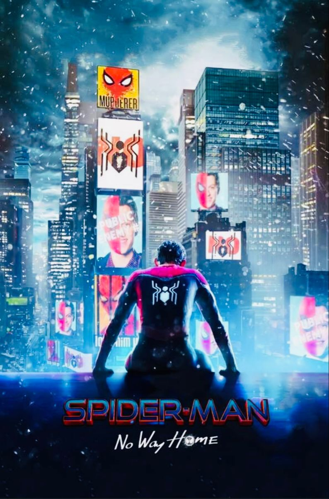
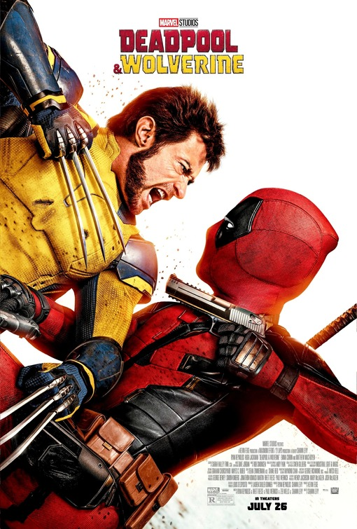
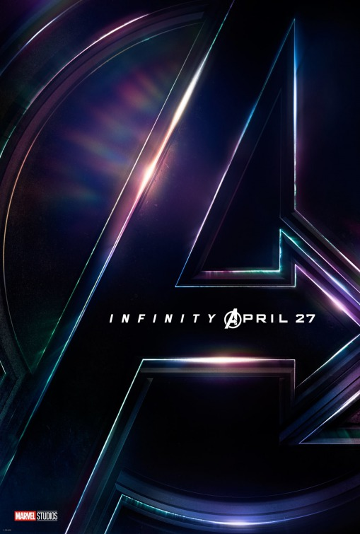
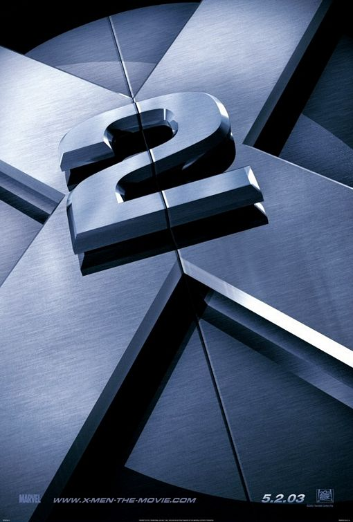
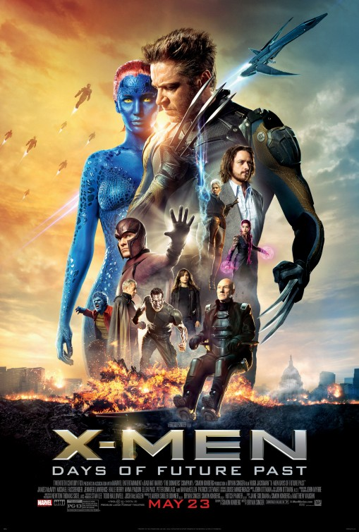
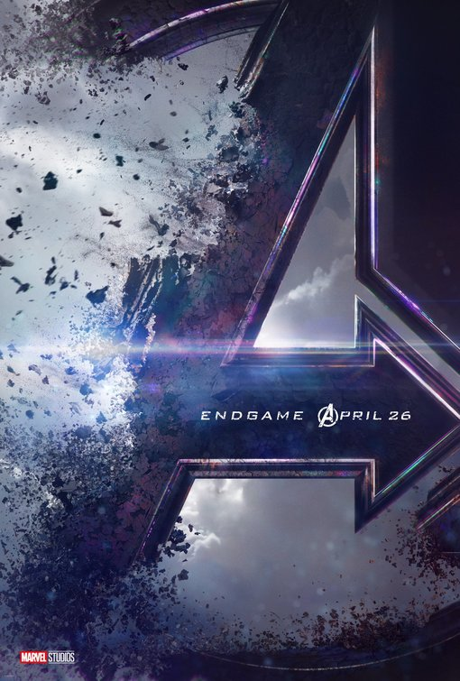
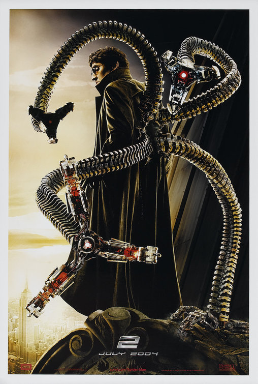
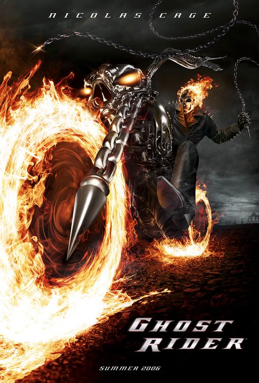
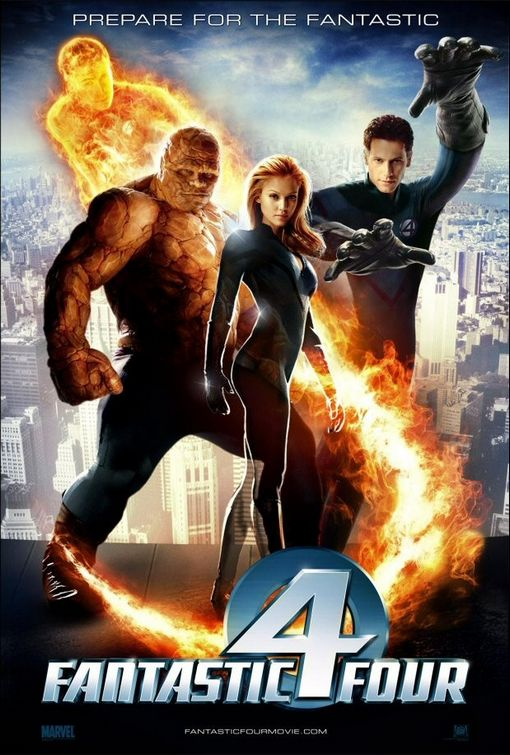
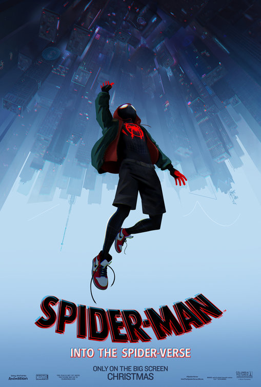

This movie culminates all of Spider-Man movies for the past 2 decades and manages to create an action-packed yet emotional story where it ties all their character arcs pretty well.

Same reason as No Way Home, but for Fox-Marvel Characters. Also, having Blade (from New Line Cinema's Blade Trilogy) and Gambit (played by Channing Tatum after years of creative hell) as the biggest surprises is a great bonus in my book.

This movie is the first part of this massive crossover event between the Avengers, Guardians of the Galaxy, Spider-Man, Doctor Strange, and the Wakandans fight against Thanos and the Black Order. This movie also subverts my expectations about Thanos since in the comics, Thanos' main motivation in getting the gems is to court Lady Death. And instead, gave us one of the best portrayals of a villain in film history and wins at the end.

This movie has one of the best opening sequences of all-time, which is when Nightcrawler attacks the White House. That sequence utilizes Nightcrawler's powers well and set the stakes for the movie. The bummer part is that Cyclops got trashed very hard. Also, Iceman is cool as well. Please make Cyclops cool again in Doomsday.

This is the original Endgame, but for X-Men since has the new cast, representing the past, and the old cast, representing the future racing against time, to prevent the Sentinels from existing. This movie has some of the best scenes, mainly Quicksilver scene, Past Professor X meets his future self, and the future timeline action sequences. Man, the Sentinels are terrifying.

This movie serves as the epic conclusion to the Infinity Saga, bringing the OG Avengers' journey to a full-circle. Especially, Tony Stark since he is the one who kickstart the MCU, and his sacrifice hits like a truck. Steve Rogers and Natasha Romanoff got their endings as well.

This movie and X2 are goated sequels. This movie explores the origin of Doctor Octopus and his turn to villainy. Which in my opinion, reminds me a lot of Darth Vader. The New Yorkers are the best, J.K. Simmons as JJJ is super funny. Spider-Man is losing powers, trying to live a normal life. But in the end, he decided to suit up again as Spider-Man and stop Doc Ock. The ending is a roller-coaster masterpiece. The power of the GOAT, in the palm of our hands indeed.

Man, Nicolas Cage carries this movie hard! Seeing the visual effects for the Ghost Rider still holds up to this day. Plus, seeing Johnny Blaze together with Carter Slade in their Ghost Rider form is absolute fire (hehe, my bad).

This movie in my opinion has the best castings for the Fantastic 4 (Micheal Chiklis as The Thing, Chris Evans as Human Torch, Ioan Gruffudd as Mister Fantastic and Jessica Alba as Invisible Woman). The story is cheesy fun and they fought against their classic villain, Doctor Doom.

This movie goes bonkers. It fundamentally changes the western animation industry (which is being dominated by Disney Pixar's 3D Realistic Style) since it looks like a comic book and tells the story like a comic book. Alongside with its stacked cast, they brought emotional depth to the characters.